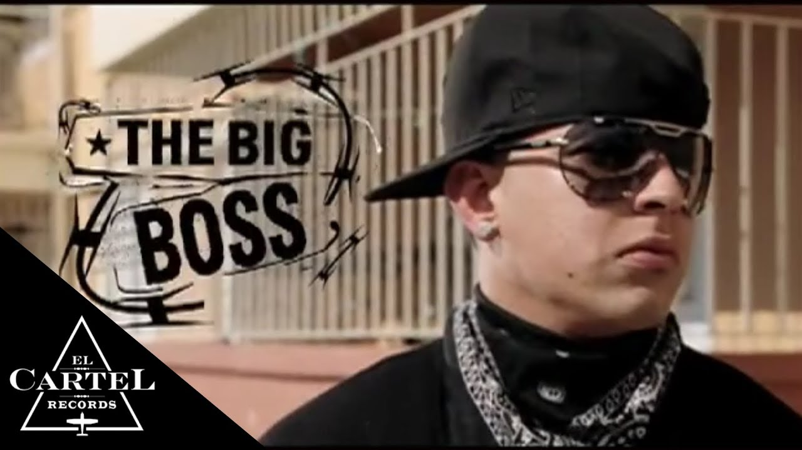

Daddy Yankee

Año de inicio/finalización:
Apareció por primera vez en el Mixtape de DJ Playero de 1992, Playero 34, con la canción So' Persigueme, No Te Detengas
Canción Más Popular:
Con Calma fue lanzado el 23 de enero de 2019 a través de El Cartel Records junto a un video musical dirigido por Marlon Peña
10 canciones más escuchadas:

Album más escuchado/Vendido:
Legendaddy es el séptimo y último álbum de Daddy Yankee, lanzado el 24 de marzo de 2022. Este álbum destacó por su diversidad de ritmos y colaboraciones con artistas internacionales, consolidando aún más el legado musical de Daddy Yankee en el reguetón.

Primer Concierto:
En 2009, Daddy Yankee dio su primer concierto oficial en La Paternal, marcando el inicio de su carrera musical en los escenarios. Este concierto fue el comienzo de una trayectoria que lo llevaría a convertirse en uno de los artistas más influyentes del reguetón.
Último concierto:
En 2023, Daddy Yankee dio su último concierto hasta la fecha como parte del tour "DADDY YANKEE 2023 FINAL CONCERT". Este evento fue un hito en su carrera, donde celebró junto a sus fans los éxitos que lo han posicionado como el Rey del Reguetón.
Primera Canción:
"Somos de Calle" es el primer sencillo promocional de Daddy Yankee, lanzado como parte de la película "Talento de Barrio". Esta canción se convirtió en un himno del reguetón y catapultó a Daddy Yankee a la fama internacional, siendo reconocido como uno de los pioneros del género.
Última canción:
"Donante de Sangre" fue la última canción oficial de Daddy Yankee hasta la fecha, lanzada en un viernes santo como un homenaje emotivo a Jesucristo. Esta canción mostró la versatilidad artística de Daddy Yankee y su capacidad para conectar con su audiencia a través de temas profundos.
Primer álbum:
"No Mercy" es el álbum de estudio debut de Daddy Yankee, producido por White Lion Records y BM Records. Este álbum estableció a Daddy Yankee como una fuerza innovadora en el reguetón, presentando sus primeros éxitos que resonaron en toda Latinoamérica y más allá.
Último álbum:
"Legendaddy" es el último álbum de estudio de Daddy Yankee, lanzado el 24 de marzo de 2022. Este álbum representa una culminación de su carrera, con canciones que reflejan su evolución musical y su impacto duradero en la música urbana global.
Biografía:
Ramón Luis Ayala Rodríguez (San Juan, 3 de febrero de 1977), conocido artísticamente como Daddy Yankee, es un cantante, compositor, empresario, productor discográfico, productor ejecutivo y filántropo puertorriqueño. Es considerado por los críticos y fanáticos de la música como el Rey del Reguetón. Yankee acuñó la palabra «reguetón» en 1991 para describir el género musical que estaba surgiendo en Puerto Rico y que posteriormente se expandió internacionalmente. A lo largo de su carrera, ha lanzado varios álbumes exitosos y ha colaborado con artistas de renombre mundial, consolidando su posición como una leyenda viviente del reguetón.